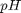

BUFFER SOLUTIONS
Calcula disoluciones 'buffer' / tampón, basado en el balance de materia y equilibrios ácido - base.
Contents
Esquema
Reacciones
1.- Adición de Base Fuerte LiB y / o Ácido Fuerte HAf ![$\begin{array}{ccccccc|cc} & & LiB & {\bf \longrightarrow \atop \leftarrow} & Li^{(+)} & + & B^{(-)} & Kc_I = C_{Lieq^{(+)}} \times C_{Beq^{(-)}} & \rightarrow \infty \\ B^{(-)} & + & H_2O & {\bf \longrightarrow \atop \leftarrow} & HB & + & OH^{(-)} & Kb_I = C_{OHeq^{(-)}} \times C_{HBeq} / C_{Beq^{(-)}} & \rightarrow \infty \\ HAf & + & H_2O & {\longrightarrow \atop \leftarrow} & H_3O^{(+)} & + & Af^{(-)} & Ka_I = C_{H_3Oeq^{(+)}} \times C_{Afeq^{(-)}} / C_{HAfeq} & \rightarrow \infty \\ & 2 & H_2O & {\rightarrow \atop \leftarrow} & H_3O^{(+)} & + & OH^{(-)} & Kw = C_{H_3Oeq^{(+)}} \times C_{OHeq^{(-)}} = 10^{-14} & = K_{c3} \times C_{H_2Oeq}^2 \\ \end{array}$](bufferSolution_eq92341.png) 2.- Adición de tampón / buffer HA + NaA
2.- Adición de tampón / buffer HA + NaA ![$\begin{array}{ccccccc|cc} & & NaA & {\bf \longrightarrow \atop \leftarrow} & Na^{(+)} & + & A^{(-)} & Kc_{II} = C_{Naeq^{(+)}} \times C_{Aeq^{(-)}} & \rightarrow \infty \\ HA & + & H_2O & {\rightarrow \atop \leftarrow} & H_3O^{(+)} & + & A^{(-)} & Ka = C_{H_3Oeq^{(+)}} \times C_{Aeq^{(-)}} / C_{HAeq} & = K_{c1} \times C_{H_2Oeq} \\ A^{(-)} & + & H_2O & {\rightarrow \atop \leftarrow} & HA & + & OH^{(-)} & Kb = C_{OHeq^{(-)}} \times C_{HAeq} / C_{Aeq^{(-)}} & = K_{c2} \times C_{H_2Oeq} \\ & 2 & H_2O & {\rightarrow \atop \leftarrow} & H_3O^{(+)} & + & OH^{(-)} & Kw = C_{H_3Oeq^{(+)}} \times C_{OHeq^{(-)}} = 10^{-14} & = K_{c3} \times C_{H_2Oeq}^2 \\ \end{array}$](bufferSolution_eq68200.png)
Condiciones de alimentación
- Agregar base fuerte y ácido fuerte .
- Agregar buffer en forma de ácido + sal . La sal se disocia completamente, el ácido de acuerdo con el equilibrio ácido-base.
- Parámetros:
Ecuaciones
Por balance de materia + carga + equilibrios:
Resulta un sistema algebráico no lineal, 4 ecuaciones independientes y 4 variables. ![$\begin{array}{cccccccccc} {V_0 \over Vr} \times \left({C_{HA_0}} + \left( C_{HAf_0} - C_{LiB_0} \right) \right) & = & + & C_{HAeq} & + & 0 & + & C_{H_3Oeq^{(+)}} & - & C_{OHeq^{(-)}} \\ {V_0 \over Vr} \times \left({C_{NaA_0}} - \left( C_{HAf_0} - C_{LiB_0} \right) \right) & = & + & 0 & + & C_{Aeq^{(-)}} & - & C_{H_3Oeq^{(+)}} & + & C_{OHeq^{(-)}} \\ 0 & = & + & Ka \times C_{HAeq} & - & C_{Aeq^{(-)}} & \times & C_{H_3Oeq^{(+)}} & + & 0 \\ Kw & = & + & 0 & + & 0 & + & C_{H_3Oeq^{(+)}} & \times & C_{OHeq^{(-)}} \\ \end{array}$](bufferSolution_eq98855.png)
Solución
Reducción a 1 ecuación polinomial de 3er orden.
![$\begin{array}{cccccc} 0 & = & + & 1 & \times & \left[ {C_{H_3Oeq^{(+)}} \over Ka} \right]^3 \\ & & + & \left( 1+{{V_0 / Vr} \over Ka} \times \left( {C_{NaA_0}} - \left( C_{HAf_0} - C_{LiB_0} \right) \right) \right) & \times & \left[ {C_{H_3Oeq^{(+)}} \over Ka} \right]^2 \\ & & - & \left( {Kw \over Ka^2} + {{V_0 / Vr} \over Ka} \times \left( {C_{NaA_0}} - \left( C_{HAf_0} - C_{LiB_0} \right) \right) \right) & \times & \left[ {C_{H_3Oeq^{(+)}} \over Ka} \right]^1 \\ & & - & {Kw \over Ka^2 } & \times & \left[ {C_{H_3Oeq^{(+)}} \over Ka} \right]^0 \\ \end{array}$](bufferSolution_eq52421.png)
- Fijar alimentación.
- Resolver ecuación cúbica para , calcular pH.
- Calcular por ec. 4.
- Calcular y por ecs. 1,2.
- Respuesta:
, 
function bufferSolution() % Generar ventana screenSize = get(0,'MonitorPositions'); Ventana = findobj('Tag','BufferSolutionGui'); pageicon = imread(['utils',filesep,'help_ug.png'],... 'BackgroundColor',[1,1,1]); saveicon = imread(['utils',filesep,'icono_guardar.png']); openicon = imread(['utils',filesep,'icono_abrir.png']); if isempty(Ventana) || ~ishandle(Ventana) || ~isscalar(Ventana) Ventana = figure('Menu','none','Toolbar','figure',... 'Color',[255,255,255]/255,'Name','Buffer Solution',... 'WindowStyle','normal','NumberTitle','off','Resize','off',... 'Units','pixels',... 'Position',[screenSize(3:4)/2-[780,400]/2,780,400],... 'Tag','BufferSolutionGui'); Panel2 = uipanel('Parent',Ventana,... 'Title','Buffer Solution',... 'BackgroundColor',[255,255,255]/255); Tabla_Entrada = uitable('Parent',Panel2,... 'Units','normalized',... 'Position',[0,1/4,30/100,3/4-1/8],... 'RowName',{},... 'ColumnName',{'VARIABLE','VALOR','UNIDADES'},... 'ColumnWidth',{ 80 'auto' 'auto' },... 'ColumnEditable',[ false true false ]); Tabla_Salida = uitable('Parent',Panel2,... 'Units','normalized',... 'Position',[1-30/100,1/4,30/100,3/4-1/8],... 'RowName',{},... 'ColumnName',{'VARIABLE','VALOR','UNIDADES'},... 'ColumnWidth',{ 80 'auto' 'auto' },... 'ColumnEditable',[ false false false ]); texto1 = uicontrol('Parent',Panel2,... 'Units','normalized',... 'Style','text',... 'String','PARÁMETROS',... 'BackgroundColor','white',... 'Position',[30/100/2-1/6/2,1-1/8+1/4/6,1/6,1/4/6]); texto2 = uicontrol('Parent',Panel2,... 'Units','normalized',... 'Style','text',... 'String','RESPUESTA',... 'BackgroundColor','white',... 'Position',[1-30/100+1/6/2,1-1/8+1/4/6,1/6,1/4/6]); Botones = uibuttongroup('Parent',Panel2,... 'Units','normalized',... 'Title','RAICES',... 'BackgroundColor','white',... 'Position',[1-30/100,1/4/10,30/100,9/4/10]); Boton_1 = uicontrol('Parent',Botones,... 'Units','normalized',... 'Style','radiobutton',... 'String','pH=',... 'BackgroundColor','white',... 'Position',[1/22,1/11,1-1/22,3/11],... 'Enable','off'); Boton_2 = uicontrol('Parent',Botones,... 'Units','normalized',... 'Style','radiobutton',... 'String','pH=',... 'BackgroundColor','white',... 'Position',[1/22,4/11,1-1/22,3/11],... 'Enable','off'); Boton_3 = uicontrol('Parent',Botones,... 'Units','normalized',... 'Style','radiobutton',... 'String','pH=',... 'BackgroundColor','white',... 'Position',[1/22,7/11,1-1/22,3/11],... 'Enable','off'); DatosIniciales = ... {... 'COND. IN./ALIM.' '' '';... 'C_HA0' 0.3 'gmol/L';... 'C_NaA0' 0.2 'gmol/L';... 'C_HAfuerte0' 0 'gmol/L';... 'C_LiBfuerte0' 0 'gmol/L';... 'Ka' 5.70*10^-10 '';... 'Kw' 10^-14 '';... 'MEDIO REAC.' '' '';... 'V0' 0.2 'L';... 'Vr' 0.2 'L';... }; DatosDeRespuesta = ... {... 'pH' [] '';... 'pOH' [] '';... 'pKa' [] '';... 'pKb' [] '';... 'C_HA' [] 'gmol/L';... 'C_A' [] 'gmol/L';... 'C_Na' [] 'gmol/L';... 'C_H3O' [] 'gmol/L';... 'C_OH' [] 'gmol/L';... 'C_Li' [] 'gmol/L';... 'C_Afuerte' [] 'gmol/L';... 'C_Bfuerte' [] 'gmol/L';... 'C_HAfuerte' [] 'gmol/L';... 'C_LiBfuerte' [] 'gmol/L';... }; BotonCalcular = uicontrol('Parent',Panel2,... 'Units','normalized',... 'Style','pushbutton',... 'String','CALCULAR',... 'Position',[30/100/2-1/6/2,1/4/2-1/4/3/2,1/6,1/4/3]); Herramientas = findall(Ventana,'Type','uitoolbar'); BotonesEnBarra = ... [... get(findall(Ventana,'Type','uipushtool'),'ToolTipString');... get(findall(Ventana,'Type','uitoggletool'),'ToolTipString'); ]; for i=1:size(BotonesEnBarra,1) if ... ~strcmp(BotonesEnBarra{i},'Insert Legend') && ... ~strcmp(BotonesEnBarra{i},'Data Cursor') && ... ~strcmp(BotonesEnBarra{i},'Pan') && ... ~strcmp(BotonesEnBarra{i},'Zoom Out') && ... ~strcmp(BotonesEnBarra{i},'Zoom In') set(findall(Herramientas,'ToolTipString',... BotonesEnBarra{i}),'Visible','Off'); end end BotonDeGuardar = uipushtool(Herramientas,... 'CData', saveicon,... 'Tag', 'uipushtool2',... 'TooltipString', 'Guardar CSV',... 'Separator', 'on'); BotonDeAbrir = uipushtool(Herramientas,... 'CData', openicon,... 'Tag', 'uipushtool3',... 'TooltipString', 'Abrir CSV'); BotonDeReporte = uipushtool(Herramientas,... 'CData', pageicon,... 'Tag', 'uipushtool1',... 'TooltipString', 'Ver procedimiento de solución',... 'Separator', 'on'); Eje1 = axes('Parent',Panel2,... 'Units','normalized',... 'OuterPosition',... [30/100,0,40/100,1/2],... 'Box','on','Layer','bottom',... 'XTick',[],'YTick',[]); Eje2 = axes('Parent',Panel2,... 'Units','normalized',... 'OuterPosition',... [30/100,1/2,40/100,1/2],... 'Box','on','Layer','bottom',... 'XTick',[],'YTick',[]); handles = struct('Tabla_Entrada',Tabla_Entrada,... 'Tabla_Salida',Tabla_Salida,'texto1',texto1,... 'texto2',texto2,'Panel2',Panel2,... 'Ventana',Ventana,'Botones',Botones,... 'Boton_1',Boton_1,'Boton_2',Boton_2,... 'Boton_3',Boton_3,'BotonDeReporte',BotonDeReporte,... 'Herramientas',Herramientas,... 'BotonDeGuardar',BotonDeGuardar,... 'BotonDeAbrir',BotonDeAbrir,... 'Eje1',Eje1,'Eje2',Eje2); handles.BotonCalcular = BotonCalcular; set(Tabla_Entrada,'Data',DatosIniciales); set(Tabla_Salida,'Data',DatosDeRespuesta); set(BotonCalcular,... 'Callback',{@funcionDeCalcular,handles}); set(Tabla_Entrada,... 'CellEditCallback',{@funcionDeCalcular,handles}); set(Botones,... 'SelectedObject',[],'SelectionChangeFcn',... {@CambioDeBoton,handles}); set(BotonDeReporte,'ClickedCallback',... {@GenerarReporte,handles}); set(BotonDeGuardar,'ClickedCallback',... {@GenerarCSV,handles}); set(BotonDeAbrir,'ClickedCallback',... {@AbrirCSV,handles}); funcionDeCalcular(Tabla_Entrada,{},handles); else figure(Ventana); end end function funcionDeCalcular(~,~,handles,varargin) Datos_entrada = get(handles.Tabla_Entrada,'Data'); Datos = ... Datos_entrada(cellfun(@isvarname,Datos_entrada(:,1)),:); Datos_no_numericos = ... cellfun(@(x)~isnumeric(x),Datos(:,2)); try Datos(Datos_no_numericos,2) = ... cellfun(@(x){eval(x)},Datos(Datos_no_numericos,2)); catch e msgbox(e.message); end Datos_s = cell2struct(Datos(:,2),Datos(:,1),1); Respuesta = get(handles.Tabla_Salida,'Data'); Ka = Datos_s.Ka; Kw = Datos_s.Kw; C_HA0 = Datos_s.C_HA0; C_NaA0 = Datos_s.C_NaA0; C_HAfuerte0 = Datos_s.C_HAfuerte0; C_LiBfuerte0 = Datos_s.C_LiBfuerte0; V0 = Datos_s.V0; Vr = Datos_s.Vr; C_HAinit = C_HA0*V0/Vr; C_Ainit = C_NaA0*V0/Vr; C_Na = C_NaA0*V0/Vr; %#ok<NASGU> C_Bfuerte = C_LiBfuerte0; %#ok<NASGU> C_LiBfuerte = 0; %#ok<NASGU> C_Li = C_LiBfuerte0; %#ok<NASGU> C_HAfuerte = 0; %#ok<NASGU> C_Afuerte = C_HAfuerte0; %#ok<NASGU> pKa = -log10(Ka); %#ok<NASGU> pKb = -log10(Kw/Ka); %#ok<NASGU> % Datos_entrada{... % strcmp(Datos_entrada(:,1),... % 'C_HAinicial'),2}... % = C_HAinit; % Polinomio C(1)*X^N + ... + C(N)*X + C(N+1) = 0 % Se representa con el vector C = [C(1),C(2),...,C(N)]; Coefs_Polinomio = ... [... +1,... +(1+1/Ka*V0/Vr*(C_NaA0-(C_HAfuerte0-C_LiBfuerte0))),... -(Kw/Ka^2+1/Ka*V0/Vr*(C_HA0+(C_HAfuerte0-C_LiBfuerte0))),... -Kw/Ka^2 ]; % Discriminante DELTA = 18 abcd - 4b^3d + b^2c^2 -4ac^3 -27a^2d^2 discriminante = ... +18*prod(Coefs_Polinomio(1:4))+... -4*Coefs_Polinomio(2)^3*Coefs_Polinomio(4)+... +Coefs_Polinomio(2)^2*Coefs_Polinomio(3)^2+... -4*Coefs_Polinomio(1)*Coefs_Polinomio(3)^3+... -27*Coefs_Polinomio(1)^2*Coefs_Polinomio(4)^2; if ~any(isnan(Coefs_Polinomio)) raices = roots(Coefs_Polinomio); else raices = NaN; end C_H3O = raices*Ka; C_OH = Kw./C_H3O; C_HA = ... + V0/Vr*(C_HA0+(C_HAfuerte0-C_LiBfuerte0)) + ... - (C_H3O - C_OH); C_A = ... + V0/Vr*(C_NaA0-(C_HAfuerte0-C_LiBfuerte0)) + ... + (C_H3O - C_OH); pH = -log10(C_H3O); pOH = -log10(C_OH); %#ok<NASGU> diferencias = .... [(C_HA - C_HAinit)';(C_A - C_Ainit)']'; sonPosit = C_H3O > 0; normas = NaN*zeros(size(diferencias,1),1); sonreales = NaN*zeros(size(diferencias,1),1); for i=1:size(diferencias,1) normas(i) = norm(diferencias(i,:)); sonreales(i) = isreal(C_H3O(i,:)); end if discriminante > 0 % 3 raices reales distintas % (X-x1_R)(X-x2_R)(X-x3_R) = 0 %raizSeleccionada = find(normas==min(normas) & sonPosit); raizSeleccionada = find( sonPosit ); elseif discriminante == 0 % 3 raices reales , dos de ellas de multiplicidad (2) % (X-x1_R)^2(X-x3_R) = 0 raizSeleccionada = find( sonPosit ); elseif discriminante < 0 % 2 raices complejas conjugadas y 1 raíz real % (X-x1_C)(X-x1_C_conj)(X-x3_R) = 0 raizSeleccionada = find( sonreales ); end if size(raizSeleccionada,1) > 1 raizSeleccionada = raizSeleccionada(1); elseif size(raizSeleccionada,1) < 1 raizSeleccionada = 2; end if size(varargin,1) > 0 && ... strcmp(varargin{1},'indiceDepHImpuesto') raizSeleccionada = varargin{2}; end for i=1:size(Respuesta,1) if exist(Respuesta{i,1},'var') Respuesta{i,2} = ... eval(Respuesta{i,1}); if ~isscalar(Respuesta{i,2}) Respuesta{i,2} = ... eval([Respuesta{i,1},... '(',num2str(raizSeleccionada),')']); elseif ~isscalar(Respuesta{i,2}) Respuesta{i,2} = ... num2str(eval(Respuesta{i,1})); end end end pH_Barrido = 0:(14/80):14; C_H3O_Barrido = 10.^(-pH_Barrido); alpha_0 = C_H3O_Barrido./(C_H3O_Barrido+Ka); alpha_1 = Ka./(C_H3O_Barrido+Ka); BETA = ... log(10)*(... Kw./C_H3O_Barrido+C_H3O_Barrido ... +(C_HAinit+C_Ainit).*Ka.*C_H3O_Barrido./(Ka+C_H3O_Barrido).^2 ... ); plot(handles.Eje1,... pH_Barrido,alpha_0,'-',... pH_Barrido,alpha_1,'--'); legend(handles.Eje1,'\alpha_0','\alpha_1'); xlabel(handles.Eje1,'pH'); plot(handles.Eje2,... pH_Barrido,BETA,'-') legend(handles.Eje2,'\beta'); xlabel(handles.Eje2,'pH'); cruce_pH = -log10(Ka); cruce_alpha_0 = interp1(pH_Barrido,alpha_0,cruce_pH); puntoMedioX = mean(get(handles.Eje1,'XLim')); posicionEnX = cruce_pH; posicionDeNota = [cruce_pH,cruce_alpha_0]; if posicionEnX >= puntoMedioX text('Parent',handles.Eje1,'Position',posicionDeNota,... 'String',['pH=pKa',... mat2str(posicionDeNota',4),... '\rightarrow\bullet',],'Fontweight','bold',... 'HorizontalAlignment','right'); else text('Parent',handles.Eje1,'Position',posicionDeNota,... 'String',['\bullet\leftarrow',... mat2str(posicionDeNota',4),... ', \alpha_0=\alpha_1'],'Fontweight','bold'); end if isreal(pH(raizSeleccionada)) puntoMedioX = mean(get(handles.Eje2,'XLim')); posicionEnX = pH(raizSeleccionada); posicionDeNota = ... [pH(raizSeleccionada),... interp1(pH_Barrido,BETA,... pH(raizSeleccionada),'nearest','extrap')]; if posicionEnX >= puntoMedioX text('Parent',handles.Eje2,... 'Position',posicionDeNota,... 'String',['pH= ',num2str(pH(raizSeleccionada)),... '\rightarrow\bullet',],'Fontweight','bold',... 'HorizontalAlignment','right'); else text('Parent',handles.Eje2,... 'Position',posicionDeNota,... 'String',['\bullet\leftarrow',... 'pH= ',num2str(pH(raizSeleccionada))],... 'Fontweight','bold'); end end for i=1:size(Datos_entrada,1) if ~isnumeric(Datos_entrada{i,2}) &&... ~strcmp(Datos_entrada{i,2},'') Datos_entrada{i,2} = eval(Datos_entrada{i,2}); end end Botones_Matriz = get(handles.Botones,'Children'); Leyendas = cell(3,1); for i=1:3 Leyendas{i} = ... ['pH=',num2str(pH(i),'%1.2f'),... ' ||DELTA|| ',num2str(normas(i),'%1.2e'),... 'gmol/L']; set(Botones_Matriz(i),'String',... Leyendas{i},'TooltipString',... Leyendas{i}, 'UserData',i); end set(Botones_Matriz,'Enable','off'); set(handles.Botones,'SelectedObject',... Botones_Matriz(raizSeleccionada)); set(Botones_Matriz,'Enable','on'); set(handles.Tabla_Salida,'Data',Respuesta); set(handles.Tabla_Entrada,'Data',Datos_entrada); end function CambioDeBoton(hObject,eventData,handles,varargin) funcionDeCalcular(hObject,eventData,handles,... 'indiceDepHImpuesto',get(get(handles.Botones,... 'SelectedObject'),'UserData')); end function GenerarReporte(~,~,~) publish('bufferSolution.m','format','html','evalCode',true); web('html/bufferSolution.html'); end function AbrirCSV(hObject,eventData,handles) [success,~] = mkdir('DATA'); if success [FileName,PathName,~]=uigetfile('./DATA/*.mat;*.xlsx;*.xls;*.csv'); else [FileName,PathName,~]=uigetfile('./*.mat;*.xlsx;*.xls;*.csv'); end Datos={}; try if FileName~=0 extension=regexp(FileName,'.mat$|.xls$|.xlsx$|.csv$','match'); if strcmp('.mat',extension) load([PathName filesep FileName],'Datos'); elseif strcmp('.csv',extension) [~,Datos]=cargarCSV([PathName FileName]); elseif strcmp(extension,'.xls') ||... strcmp(extension,'.xlsx') [~,~,Datos]=xlsread([PathName FileName]); Datos=quitarNaN(Datos); end % % Poner estos valores en la tabla uitable1 (a la izq.)} set(handles.Tabla_Entrada,'Data',Datos); % % Correr el código para actualizar ( o generar en dado caso) la gráfica % solicitada. funcionDeCalcular(hObject,eventData,handles); end catch exception msgbox([exception.identifier,'. ',... exception.message],'ERROR','error'); end end function GenerarCSV(~,~,handles) Datos = get(handles.Tabla_Entrada,'Data'); [success,~] = mkdir('DATA'); success = success && fileattrib('./DATA','+w'); try actxserver('Excel.Application'); ExcelInstalled = true; catch exception %#ok<NASGU> ExcelInstalled = false; end if ExcelInstalled defaultExtension='.csv'; elseif ~ExcelInstalled defaultExtension='.csv'; end if success [FileName,PathName,~]=uiputfile({'*.mat';'*.xls';'*.csv'},... 'Guardar estado de variables',['./DATA/*',defaultExtension]); else [FileName,PathName,~]=uiputfile({'*.mat';'*.xls';'*.csv'},... 'Guardar estado de variables',['./*',defaultExtension]); end if FileName~=0 extension=regexp(FileName,'.mat$|.xls$|.xlsx$|.csv$','match'); if isempty(extension) extension='.xls'; FileName=[FileName,extension]; end if strcmp('.mat',extension) save([PathName,FileName],nombreDeVariable(Datos)); elseif strcmp(extension,'.xls') ||... strcmp(extension,'.xlsx') try xlswrite([PathName,FileName],... get(handles.uitable1,'Data')); catch exception %#ok<NASGU> warning('MATLAB:xlswrite:NoCOMServer',... ['Could not start Excel server for export.\n' ... 'XLSWRITE will attempt to write file in CSV format.']); guardarCSV([PathName,FileName],... get(handles.Tabla_Entrada,'Data')); end elseif strcmp(extension,'.csv') guardarCSV([PathName,FileName],... get(handles.Tabla_Entrada,'Data')); end end end